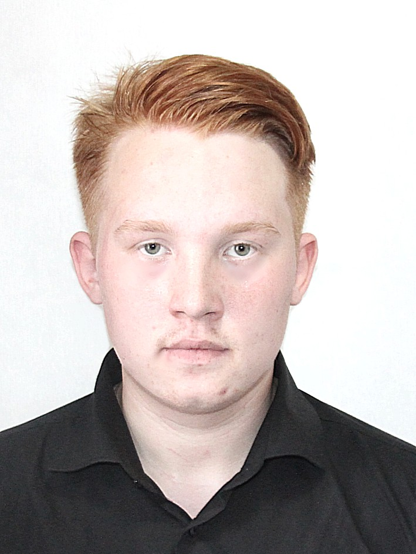

Дата рождения: 14 апреля 2003 / 18 лет

Семейное положение: холост, детей нет
Адрес: г. Киров. ул. Ломоносова 16а, корпус 2 , кв. 168
Контакты: тел.сот.: +7-922-949-96-01
Цель: получение должности специалиста по информационной безопасности
Образование: 2010-2021 гг. КОГОБУ СШ ПГТ СВЕЧА Средний балл успеваемости: 4,5
Опыт работы:
2018 пгт. Свеча, Должность: Разнорабочий. Трудовые обязанности: колка дров, помощь по дому;
Достижения:
Окончил школу хорошистом
1 юношеский разряд спортивному туризму
Награда от главы Кировской области Васильева Игоря Владимировича за успехи в спорте
Дополнительные интересы и увлечения:
2017-2020 игра на гитаре;
2015-2022 спортивный туризм;
Знание иностранных языков: Английский - A1 — Beginner